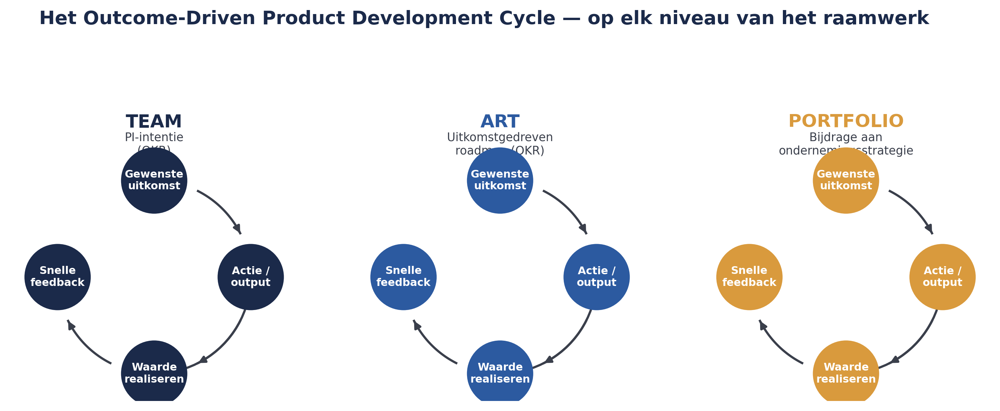
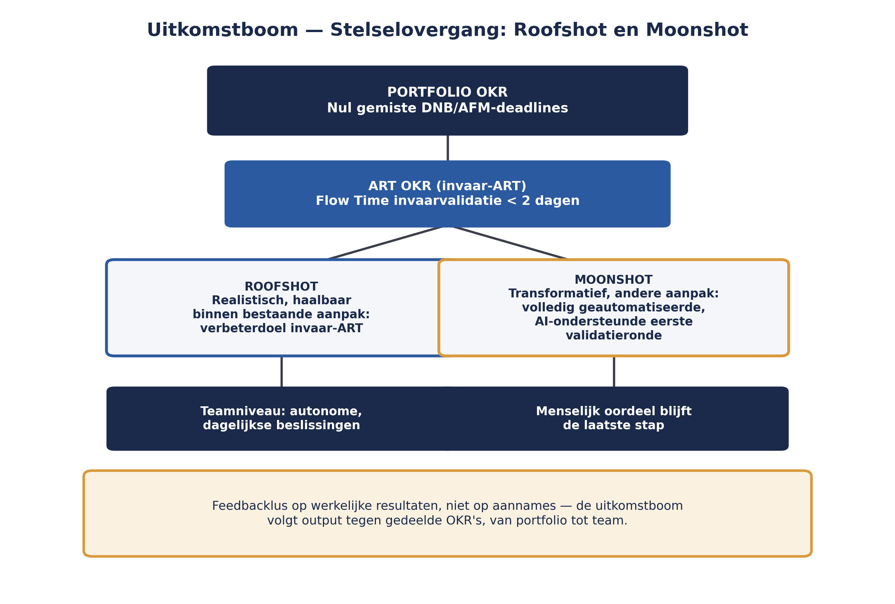

Cursus SAFe · Niveau 3 (SPC-oriëntatie) · Deel 29 van 30
AI-Native III: een AI-native operating model ontwerpen
Net als deel 9 en deel 21 staat dit deel apart van de rest van niveau 3. De inhoud is gebaseerd op de stand van de AI-Native SAFe-webinarreeks medio augustus 2026 (sessies 1-4 van de zes) en wordt bijgewerkt zodra Scaled Agile na de SAFe Summit van september 2026 het volledige beeld heeft onthuld. Dit deel voltooit de AI-Native-lijn op portfolioniveau: van output naar uitkomst, Roofshots en Moonshots, en de praktische stappen voor een AI-native operating model. Dit is geen voorbereiding op het SPC-examen.
6secties
±1uoriënterend, geen examenstof
7controlevragen
5stappen operating model
Positionering. Deze cursus is een voorbereiding op de certificeringen SAFe Agilist (SA) en SAFe Practitioner (SP) van Scaled Agile, en uitdrukkelijk geen vervanging van het officiële SAFe-curriculum — dat wordt uitsluitend aangeboden via geautoriseerde Scaled Agile Partners. Voor terminologie en structuur volgen wij SAFe 6.0, de actuele versie van het Core-raamwerk.
Niveau 3: 23 SPC-rol & Implementation Roadmap → 24 Leiders trainen & LACE → 25 Waardestromen op stelselschaal → 26 Een ART launchen → 27 Coachen & trainen → 28 Organisatieverandering & cultuur → 29 AI-Native III (hier) → 30 Proefexamen + masterproef
01
Van team en ART naar portfolio: het Outcome-Driven cycle
⏱ 14 min
Let op — oriënterend, wordt bijgewerkt
Net als deel 9 en deel 21 staat dit deel apart van de rest van niveau 3. De inhoud is gebaseerd op de stand van de AI-Native SAFe-webinarreeks medio augustus 2026 (sessies 1-4 van de zes) en wordt bijgewerkt zodra Scaled Agile na de SAFe Summit van september 2026 het volledige beeld heeft onthuld.
Dit is geen voorbereiding op het SPC-examen. Dat examen blijft gebaseerd op de SPC-stof zoals behandeld in deel 23 tot en met 28 en 30. Dit deel is oriënterend.
Deel 9 behandelde het AI-Native Team, deel 21 de AI-Native ART. Dit deel voltooit de lijn met het portfolioniveau, aan de hand van wat Scaled Agile het Outcome-Driven Product Development Cycle noemt: een cyclus die op elk niveau van het raamwerk geldt — team, ART en portfolio — met als kernmissie het versnellen van de stroom van gewenste uitkomst naar gerealiseerde waarde, met snelle feedbacklussen.
De onderliggende verschuiving is fundamenteel: zodra AI het genereren van output drastisch goedkoper maakt, is het opleveren van een feature op zichzelf geen onderscheidend vermogen meer — het is slechts output. Het antwoord is niet om output rechtstreeks te managen, maar uitkomsten te managen, en dat is hoe waarde uit toegenomen output wordt gehaald.

Figuur 29-1 — het Outcome-Driven Product Development Cycle op team-, ART- en portfolioniveau
Controlevraag
Uit Werkboek deel 29, Opdracht 29.1 — output versus uitkomst
1Leg het verschil uit tussen output en uitkomst. Geef een eigen voorbeeld bij de invaar-ART van Meridiaan: wat zou een output zijn, en wat de bijbehorende uitkomst?Toon antwoord
Output is wat er wordt geproduceerd — bijvoorbeeld een gegenereerd conceptvalidatierapport. Uitkomst is het effect daarvan — bijvoorbeeld minder fouten in ingevaren pensioenaanspraken, of sneller verwerkte dossiers. Het managen van output alleen (hoeveel rapporten worden gegenereerd) zegt niets over waarde; pas de uitkomst laat zien of dat ook daadwerkelijk iets oplevert.
02
Uitkomsten als OKR's, op elk niveau
⏱ 13 min
Binnen deze cyclus worden uitkomsten uitgedrukt als OKR's (deel 19), die lopen van de bijdrage van de portfolio aan de ondernemingsstrategie tot de intentie van een team voor de aankomende PI. Op ART-niveau zijn uitkomsten niet langer alleen een achteraf-samenvatting van wat gepland was — ze zijn actieve input voor het planningsgesprek zelf, bieden afstemming tussen ARTs, en vormen de basis voor de Sense and Respond-events die je in deel 9 al kort tegenkwam. Nieuwe uitkomstgedreven roadmaps verschuiven van het in kaart brengen van outputs naar het visualiseren van intentie en mijlpalen.
Controlevraag
Uit Werkboek deel 29, Zelftoets vraag 1
1Wat is het Outcome-Driven Product Development Cycle, en op welke niveaus geldt het?Toon antwoord
De cyclus die op team-, ART- en portfolioniveau geldt, gericht op het versnellen van de stroom van gewenste uitkomst naar gerealiseerde waarde met snelle feedback. Uitkomsten worden op elk van die niveaus uitgedrukt als OKR's, van de bijdrage van de portfolio aan de ondernemingsstrategie tot de intentie van een team voor de aankomende PI.
03
De uitkomstboom: Roofshots en Moonshots
⏱ 16 min
De uitkomstboom (outcome tree) volgt output tegen gedeelde OKR's, van portfolioniveau tot individuele teams, en creëert zo een feedbacklus die gebaseerd is op werkelijke resultaten in plaats van aannames. Ambitie wordt hierbij gekalibreerd via twee soorten doelen:
Roofshots — realistische, haalbare doelen binnen de bestaande aanpak.
Moonshots — ambitieuze, transformatieve doelen die een fundamenteel andere aanpak vereisen.
Dit onderscheid geeft teams houvast om autonome, dagelijkse beslissingen te nemen die toch stevig verbonden blijven met de overkoepelende visie van de organisatie — een directe voortzetting van principe 9 uit deel 2 (gedecentraliseerde besluitvorming), nu concreet gemaakt met een expliciete ambitiegraad per doel.

Figuur 29-2 — de uitkomstboom voor de Stelselovergang, met Roofshot en Moonshot naast elkaar
Controlevragen
Uit Werkboek deel 29, Zelftoets vraag 2 en Opdracht 29.2 — Roofshot of Moonshot?
1Wat is het verschil tussen een Roofshot en een Moonshot?Toon antwoord
Een Roofshot is een realistisch, haalbaar doel binnen de bestaande aanpak; een Moonshot is een ambitieus, transformatief doel dat een fundamenteel andere aanpak vereist.
2Classificeer voor de Stelselovergang: (1) de doorlooptijd van invaarvalidatie met twintig procent verkorten binnen de bestaande werkwijze; (2) een volledig geautomatiseerde, AI-ondersteunde eerste validatieronde voor alle invaardossiers; (3) één extra controlestap toevoegen aan het bestaande proces; (4) het volledige invaarproces herontwerpen rond continue, geautomatiseerde datakwaliteitscontrole.Toon antwoord
(1) Roofshot. (2) Moonshot. (3) Roofshot. (4) Moonshot. Het onderscheid is geen strikte classificatie maar een kalibratie-instrument: de eerste en derde blijven binnen de bestaande aanpak, de tweede en vierde vereisen een fundamenteel andere aanpak.
04
Een nieuwe economische realiteit: variabele AI-kosten
⏱ 14 min
AI-Native oplossingen doorbreken de aanname van een vast IT-budget: kosten worden nu in hoge mate variabel, gedreven door de economie van tokenverbruik. Context-rijke prompts, systeeminstructies en geautomatiseerde lussen kunnen kosten veel sneller laten oplopen dan een traditioneel budget voorziet. Portfolioleiders moeten daarom guardrails voor tokenbesteding instellen — een directe uitbreiding van de Lean Budget Guardrails uit deel 17 — vaste en variabele kosten scheiden, en verbruik doorlopend monitoren.
Controlevraag
Uit Werkboek deel 29, Opdracht 29.4 — guardrails voor tokenbesteding
1Waarom zou een organisatie als Meridiaan aparte guardrails voor AI-tokenbesteding willen, naast de reguliere Lean Budget Guardrails? Wat is het verschil tussen deze twee soorten kosten?Toon antwoord
Traditionele IT-kosten zijn grotendeels vast (licenties, infrastructuur, personeel); AI-tokenkosten zijn variabel en schalen direct mee met gebruik — een toename in promptcomplexiteit of automatisering kan de kosten sneller laten stijgen dan een jaarlijks vastgesteld budget voorziet. Aparte guardrails maken dit verschil expliciet beheersbaar in plaats van een verrassing achteraf.
05
Vijf stappen voor een AI-native operating model
⏱ 15 min
Los van de specifieke SAFe-terminologie, kristalliseert zich een praktisch stappenplan voor een organisatie die een AI-native operating model wil ontwerpen:
Benoem de klant- en bedrijfsuitkomsten die de volgende investering rechtvaardigen — niet de output.
Identificeer welke data, beleid, specificaties en operationele context een AI-systeem mag gebruiken.
Verhelder welke beslissingen AI mag aanbevelen, welke het binnen guardrails mag uitvoeren, en welke beslissingen bij mensen blijven — een directe uitwerking van het principe uit deel 9 (menselijk oordeel als laatste stap) en deel 21 (AI-governance en -ethiek).
Meet of outputs daadwerkelijk de verklaarde uitkomst veranderen — adoptie, kwaliteit, omzet, kosten, risico.
Stel een stopregel in voor experimenten en features die wel activiteit maar geen impact opleveren.
Nog geen operating model op zichzelf
Deze stappen bevestigen een terugkerend inzicht uit deze cursus: het aanschaffen van AI-copiloten maakt een organisatie nog niet AI-native, net zoals het invoeren van PI Planning en ART-rollen een organisatie nog niet Agile maakt zonder de onderliggende mindset (deel 2, deel 27).
Controlevragen
Uit Werkboek deel 29, Opdracht 29.3 — de vijf stappen toepassen
1Meridiaan overweegt AI in te zetten om een eerste concept-validatierapport te genereren voor elk invaardossier. Doorloop de vijf stappen: welke uitkomst rechtvaardigt dit, welke data mag het systeem gebruiken, welke beslissing blijft bij een mens, en welke stopregel zou je instellen?Toon antwoord
Uitkomst: bijvoorbeeld sneller en consistenter een eerste inschatting van datakwaliteitsrisico's per dossier. Data: de bestaande, geverifieerde regelgeving en historische dossierdata — geen ongecontroleerde externe bronnen. Beslissing bij een mens: de definitieve goedkeuring van een invaardossier blijft bij een domeinexpert; AI mag het concept-validatierapport genereren en risico's signaleren. Stopregel: bijvoorbeeld als na drie PI's het aantal handmatige correcties niet afneemt, wordt het experiment gestopt of grondig herzien.
06
Terug naar Meridiaan: een AI-native operating model
⏱ 13 min
Voor de Stelselovergang zou een AI-native operating model op portfolioniveau concreet betekenen: de Strategic Theme "Wtp-transitie tijdig en foutloos afronden" (deel 17) wordt vertaald naar OKR's die van portfolioniveau (bijvoorbeeld: "nul gemiste DNB/AFM-deadlines") doorlopen naar teamniveau (bijvoorbeeld: "Flow Time voor invaarvalidatie onder de twee dagen"). Een Roofshot zou een realistisch verbeterdoel zijn binnen de bestaande invaar-ART; een Moonshot zou bijvoorbeeld een volledig geautomatiseerde, AI-ondersteunde eerste validatieronde voor alle invaardossiers zijn — ambitieus, en nadrukkelijk onderworpen aan het principe dat menselijk oordeel de laatste stap blijft bij elke beslissing die een individuele pensioenaanspraak raakt. De guardrails voor tokenbesteding zouden bij Meridiaan in dezelfde Participatory Budgeting-cyclus (deel 17) worden meegenomen als de reguliere Lean Budgets, niet als een aparte, ongecontroleerde kostenpost.
Kernbegrippen uit dit deel
Outcome-Driven Product Development Cycle — de cyclus die op team-, ART- en portfolioniveau geldt: van gewenste uitkomst naar gerealiseerde waarde, met snelle feedback.
Uitkomstboom (outcome tree) — de koppeling van OKR's van portfolio- tot teamniveau, gebaseerd op werkelijke resultaten.
Roofshots en Moonshots — realistische versus transformatieve doelen, als kalibratie-instrument voor ambitie.
Guardrails voor tokenbesteding — de AI-Native uitbreiding van de Lean Budget Guardrails (deel 17) voor variabele, verbruiksgedreven AI-kosten.
Vijf stappen voor een AI-native operating model — uitkomsten benoemen, data/context bepalen, beslissingsniveaus vastleggen, meten, stopregels instellen.
Controlevraag
Uit Werkboek deel 29, Zelftoets vraag 4
1Waarom zijn AI-kosten fundamenteel anders dan traditionele IT-kosten, en wat vraagt dat van portfolioleiders — zoals bij Meridiaan, waar guardrails voor tokenbesteding in de Participatory Budgeting-cyclus worden meegenomen?Toon antwoord
AI-kosten zijn variabel en gedreven door tokenverbruik in plaats van vast. Portfolioleiders moeten daarom aparte guardrails instellen, vaste en variabele kosten scheiden, en verbruik doorlopend monitoren — bij Meridiaan concreet door dit in dezelfde Participatory Budgeting-cyclus mee te nemen als de reguliere Lean Budgets, in plaats van als een aparte, ongecontroleerde kostenpost.
Verder naar deel 30
Deel 30 sluit niveau 3 — en de hele cursus — af: eerst oefenvragen in SPC-stijl over niveau 3, daarna de masterproef, waarin u als SPC een crisis binnen de Stelselovergang moet doorstaan en verdedigen in een boardsimulatie.